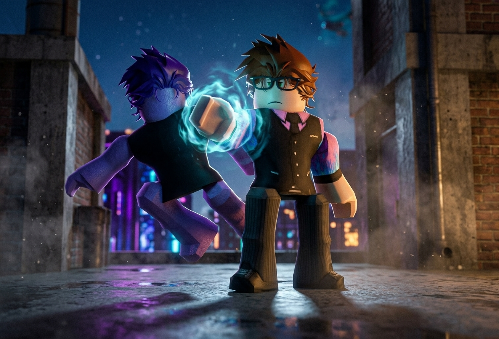

Done The Impossible — Chapters 1–5
The Finale of Saga 3: The Varkuun Incident Arc

Chapter 1: The Dark Star Arrives
The smoke above the Varkuun battlefield had barely begun to clear when the air grew cold, dense, and electric. A rift of pure obsidian energy split the skyline as Seron Darkness—The Dark Star and supreme Leader of The Guardians—descended onto the astral soil. Surveying the neutralized Vexx forces, the secured Crimson Fear Arsenal, and Director Ami Zero in bindings, Seron nodded slowly in approval.
"Outstanding work," Seron declared, his presence commanding absolute respect. "You've completely dismantled their front on Varkuun and secured the stolen hardware. The mission is officially cleaned up."
Chapter 2: Preparations for Departure
With Ami Zero secured for transport to Guardia for deep questioning, the squad began prepping their gear and establishing transport coordinates back to headquarters. The long, grueling campaign across Varkuun was finally drawing to a close, and the Guardians prepared to withdraw back to their home world.
Chapter 3: A Royal Confession
Before Ral Awakening could step toward the extraction portal, Princess Anuket stepped forward, stopping him in his tracks. Hesitating for only a moment, she looked into Ral's eyes—moved by his bravery, his mastery of the Crimson Fear, and the chain-and-blade combat he had displayed.
"Ral... don't leave yet," Anuket said softly, her voice filled with emotion. "I don't want you to just walk away after everything we've been through. Will you date me?"
Ral looked at her, a genuine smile breaking across his face. Without hesitation, he accepted: "I'd love to, Anuket."
Chapter 4: A New Home on Guardia
Seeing the bond between the two, Seron Darkness stepped in with a suggestion. "Varkuun is safe now, but Guardia offers protection, freedom, and a place where you both won't have to fight alone. Why not come back to Guardia with us, Anuket? You and Ral can live a happy life together there."
Anuket's eyes lit up at the proposal. The thought of starting a peaceful life alongside Ral under the protection of Guardia sounded ideal. "I love the sound of that," she agreed happily, preparing to join the Guardians on their transport.
Chapter 5: The Fogborn Revelation
As the team finalized their departure, Tom Letanio's communicator chimed with an encrypted incoming transmission. It was a high-priority distress and intelligence pulse from Marcel Toxin, the master Toxin Scientist and deadly Scythe User.
"Tom, read me?" Marcel's voice crackled through the channel, sharp and urgent. "Tell Seron immediately... I've finished investigating the Fogborn Syndicate. What I found goes far deeper than we thought. I have a massive revelation."
Tom's expression shifted from relief to grim concentration as he looked toward Seron. Saga 3 had reached its end, but the shadows of a new, far deadlier conflict were already beginning to rise.